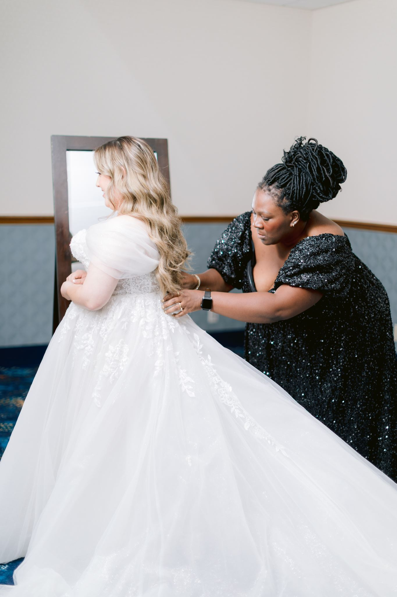

About
Founder of Vow & Veil Events

Meet Erin
Erin founded Vow & Veil Events to provide experienced, polished support for weddings, life celebrations, milestone events, and corporate gatherings throughout Southern California.
With more than a decade of experience in events, guest experience, vendor coordination, and event production, she brings a highly organized approach to every celebration.
Vow & Veil was created for clients who want expert, white glove service without losing the personality and meaning behind their event.

Behind the Scenes
Every event has moving parts, but the people at the center of it should not have to manage them.
Erin focuses on the details, communication, timing, and logistics behind the scenes so clients can be present for the moments they gathered to celebrate.
Whether it is a wedding, milestone celebration, private gathering, or corporate event, the goal is the same: to create an experience that feels polished, personal, and fully supported from beginning to end.
More Than a Decade of Events
Erin has spent more than a decade working throughout Southern California across weddings, private celebrations, nonprofit events, corporate events, and large guest experiences.
That background brings perspective, flexibility, and the ability to stay composed when plans change.
Because a successful event is not only about how it looks. It is about how it feels to experience it.